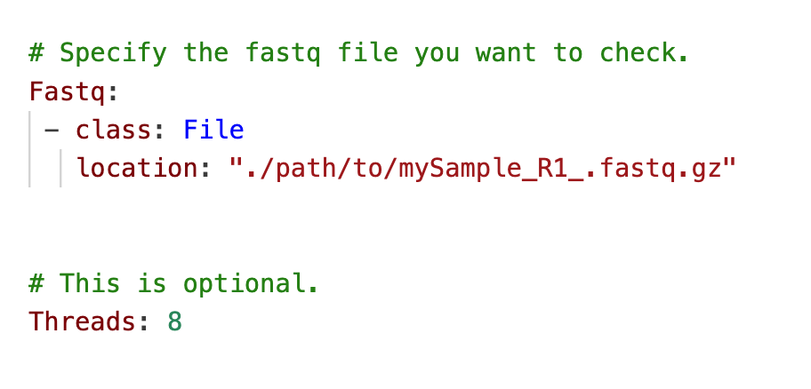
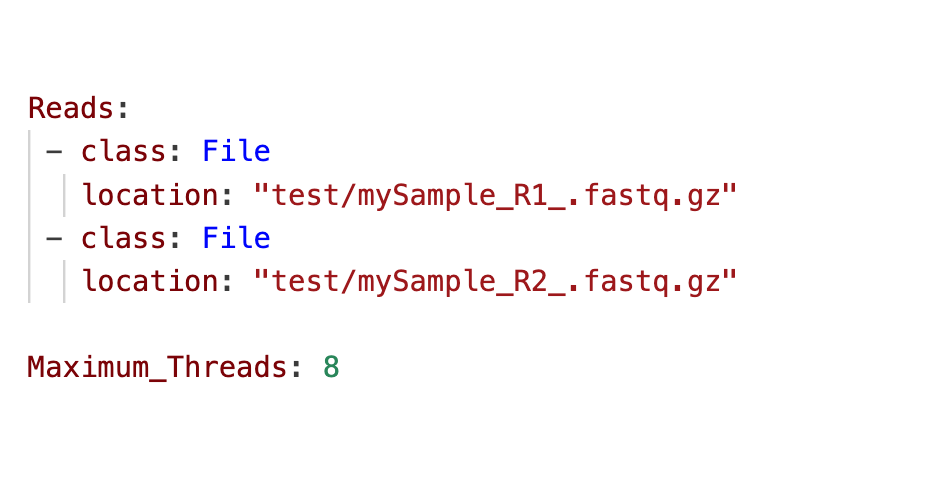

Pipeline Setup, Requirements and Extra Utilities
Setting up Rhapsody™ Pipeline using several methods:
- Cloud Computing:
Known as Velsera (Previously known as Seven Bridges Genomics Platform).
Free as complimentary to all BD Rhapsody™ Customers. - Local Installation(Docker):
Compatible with MacOS and LINUX only. Windows is not supported.
Need Docker Image which need system administrator permission. - Pipeline bundle (Docker- free):
For HPC user on LINUX/Ubuntu environment only. Windows and MacOS is not supported.
As easy as Download, Untar and run.
Pipeline System Requirements
System requirements for Local Installation and Pipeline Bundle.
- Supported Operating System:
- Docker: Operating system: macOS® or Linux®. Microsoft® Windows® is not supported
- Pipeline Bundle: Linux based system only.
- (Ubuntu 16.04 / 20.04 / 22.04)
- Red Hat 7
- CentOS 7 / 9
- 8-core processor (>16-core recommended)
- Targeted assays: 32 GB RAM (>128 GB recommended)
- Whole Transcriptome Analysis (WTA) assays: 96 GB (>192 GB recommended)
Pipeline Extra Utilities
Our pipeline is equipped with multiple extra utlitilies that commonly requested by our valuable customers.
- Make BD Rhapsody™ Reference:
Create a new WTA or WTA_ATAC Reference Archive for use as an input to the BD Rhapsody™ Sequence Analysis Pipeline. - PhiX Contamination Detection:
Check a FASTQ file for PhiX contamination, by aligning the reads to the PhiX genome. (uses Bowtie2) - Annotate Cell Label and UMI only:
Given pairs of R1/R2 FASTQ files from BD Rhapsody™ libraries, only annotate the cell label and UMI of R1 and put it in the header of R2.
Velsera Platform Setup
Seven Bridges Genomics Platform or now moved to Velsera is one of the cloud based platform available to run BD Rhapsody™ Analysis pipeline, suited for new or experiences customers that unfamiliar with coding in Bioinformatics. This web browser interface platform will generate output HTML from FASTQ input files from your sequencing service.
Create an acccount on Velsera
- Visit Velsera website to register your account.
- Click Request Access.
- In the request access window, enter your email address to receive an email invitation for the Seven Bridges Genomics platform within 24 hours
- Click the link in the email invitation and complete the registration process. Velsera will then displays the dashboard with demo projects to help you familiarized yourself with the platform.
- At the top of the dashboard, click Projects > Create a project.
- Enter a descriptive and concise project name for easy identification, and adjust the project URL if necessary.
- Ensure that the Billing Group and Location remain unchanged. Confirm that Spot instances and Memoization are enabled. Memoization facilitates the automatic reuse of intermediate files during reruns.
- Click on Create. Seven Bridges Genomics will then present the new project dashboard.
- After the project is successfully created, if you wish to modify the retention period of intermediate files, navigate to Settings in the top right corner. Input an integer value between 1 and 120 in the Retention period box to specify the desired number of hours for retention, and then click "Save".
Local Installation on MacOS
The docker image features require root-level access to install.
For users operating on an institutional server, please collaborate with your system administrator to determine the directories, system resources allocation for Docker image.
For those who do not have root access, you can skip the docker installation process and use "Docker-free" bundle. Please find the instruction on the available tab above.
Software requirements for local installation
- Docker container:
- A Docker container is a self-contained environment for pipeline analysis and is obtained by "pulling" or downloading a Docker image to your local computer.
- It encompasses all the necessary libraries and settings required by the pipeline to execute the analysis.
- CWL-runner:
- The CWL-runner is the tool responsible for managing Docker containers to complete the pipeline run.
- It utilizes two inputs:
- "CWL workflow" file: This file describes each step in the pipeline and outlines how each Docker container should run to complete the step.
- "YML input specification" file: This file informs the CWL-runner about the location of the pipeline inputs to execute the tools during pipeline analysis.
- Once the pipeline run is completed, the CWL-runner retrieves the final outputs from the Docker containers and adds them to a designated output folder on your computer.
Docker installation
- Install Community edition Docker depending on your system (MacOS).
- Ensure that you successfully complete the installation process and agree to the terms and conditions; failure to do so will prevent Docker from running.
- Open your terminal and validate that Docker is running properly by typing the command below:
docker
- Verify that the Docker manual is printed to the terminal screen.
- Proceed with the next installation steps.
Python Installation Using Homebrew:
This installation guide is tailored for the latest version of macOS M3 Apple Silicon chip. Unlike UNIX/Linux-based systems, macOS lacks a standard operation for installing third-party command-line tools beyond the standard Apple installer. To address this, we will leverage Homebrew to facilitate the installation and management of command-line utilities.
- Open terminal
- paste the following command
- Press Return key
- You will be presented with a list of items to be installed, enter your admin password when prompted.
- Continue entering your password until you receive the notification of "installation successful".
- Type code below to make sure it is on your PATH; otherwise an error "brew command not found" will be displayed.
- Then we need to install Python. For Python version greater than 3.4, pip, a package manager for Pyhton will be installed simultaneously. Pip allow users to install and manage packages that are not part of the Pyhton standard library.
- To install Python, type the command below and press Return key.
- Now link the Homebrew Python version and set it as the default. Enter the command below and press Return key.
- Check if a version of Python 3 is already installed by running the following command and press Return key.
- Ensure that you are using a local installation of Python and not a system version by running following command.
- This should return the path to a local installation, such as (/usr/bin/python for macOS intel) or (/opt/homebrew/bin/pyhton3 for Mac M1/M2/M3), and not to a system path (e.g., /c/mnt/Python/bin/python). Using a system installation of python may not grant sufficient permissions for installing required packages.
- Install/update pip in terminal by entering command line below.
/bin/bash -c "$(curl -fsSL https://raw.githubusercontent.com/Homebrew/install/HEAD/install.sh)"
brew
brew install python
brew unlink python && brew link python
python3 --version
which python3
python3 -m pip install -upgrade pip
Please continue to CWL runner installation for MasOS and LINUX systems.
CWL-runner installation
- Update pip before installing cwl-runner by using the command:
- Install the package from PyPi. Enter:
- Ensure that cwl-runner is in your path. Type:
- If the command is not found, add the install location of the pip packages to $PATH. Find where cwl-runner is installed by entering:
- Add the above location to $PATH. For example:
- Restart the command line utility.
pip install -U pip
pip install cwl-runner
cwl-runner
pip show cwl-runner
export
PATH=$PATH:`/Library/Frameworks/Python.framework/Versions/3.6/lib/python3`
You should substitute the `highlighhted` part after : with your `Location`
Configure CWL and YML files:
- Ensure that you are employing the correct CWL files for your pipeline; otherwise, the analysis may encounter failures.
- If necessary, establish a Bitbucket account by visiting bitbucket.org/CRSwDev/cwl.
- Navigate to the left pane and select Downloads > Download Repository. This action will result the downloading of CWL and YML files crucial for the analysis.
- Unzip the archive, and within it, you will find folders named after the respective pipeline versions they corresponds to.
Configure pipeline image:
- Confirm that Docker is operational. Navigate to the download directory where you saved the Docker application and double click on it to ensure it is running.
- Download (pull) the latest Docker image by executing the following command:
- Verify the availability of the pipeline image by entering:
- The pull command automatically fetches the latest version of the pipeline. If you wish to download an earlier version, specify the version number in the following manner:
docker pull bdgenomics/rhapsody
docker images
docker pull bdgenomics/rhapsody:v1.0
Local Installation on LINUX
The Docker image features require root-level access to install.
For users operating on an institutional server, please collaborate with your system administrator to determine the directories and system resource allocation for the Docker image.
For those who do not have root access, you can skip the Docker installation process and use the "Docker-free" bundle. Please find the instructions on the available tab above.
Software requirements for local installation
- Docker container:
- A Docker container is a self-contained environment for pipeline analysis and is obtained by "pulling" or downloading a Docker image to your local computer.
- It encompasses all the necessary libraries and settings required by the pipeline to execute the analysis.
- CWL-runner:
- The CWL-runner is the tool responsible for managing Docker containers to complete the pipeline run.
- It utilizes two inputs:
- "CWL workflow" file: This file describes each step in the pipeline and outlines how each Docker container should run to complete the step.
- "YML input specification" file: This file informs the CWL-runner about the location of the pipeline inputs to execute the tools during pipeline analysis.
- Once the pipeline run is completed, the CWL-runner retrieves the final outputs from the Docker containers and adds them to a designated output folder on your computer.
Docker installation
- Install Community edition Docker depending on your system (LINUX).
- Ensure that you successfully complete the installation process and agree to the terms and conditions; failure to do so will prevent Docker from running.
- Open your terminal and validate that Docker is running properly by typing the command below:
docker
- Verify that the Docker manual is printed to the terminal screen.
- Proceed with the next installation steps.
Python installation
- First you need to check if you have any Python installed in your system by running the code below and press Enter.
- Ensure that you are using a local installation of Python and not a system version. Run the following command line.
python3 --version
If Python 3 is not installed, download and install it from website here. Re-run the code above to check if the Python is now successfully installed.
which python3
This should return the path to a local installation (usually /usr/bin/python) and not to a system path.
A system path will look like this (/c/mnt/Python/bin/python).
Using a system installation of python might not give you sufficient permissions to install the required packages.
CWL-runner installation
- Update pip before installing cwl-runner by using the command:
- Install the package from PyPi. Enter:
- Ensure that cwl-runner is in your path. Type:
- If the command is not found, add the install location of the pip packages to $PATH. Find where cwl-runner is installed by entering:
- Add the above location to $PATH. For example:
- Restart the command line utility.
pip install -U pip
pip install cwl-runner
cwl-runner
pip show cwl-runner
export
PATH=$PATH:`/Library/Frameworks/Python.framework/Versions/3.6/lib/python3`
You should substitute the `highlighted` part after : with your `Location`
Configure CWL and YML files:
- Ensure that you are employing the correct CWL files for your pipeline; otherwise, the analysis may encounter failures.
- If necessary, establish a Bitbucket account by visiting bitbucket.org/CRSwDev/cwl.
- Navigate to the left pane and select Downloads > Download Repository. This action will result the downloading of CWL and YML files crucial for the analysis.
- Unzip the archive, and within it, you will find folders named after the respective pipeline versions they corresponds to.
Configure pipeline image:
- Confirm that Docker is operational. Navigate to the download directory where you saved the Docker application and double click on it to ensure it is running.
- Download (pull) the Docker image by executing the following command:
- Verify the availability of the pipeline image by entering:
- The pull command automatically fetches the latest version of the pipeline. If you wish to download an earlier version, specify the version number in the following manner:
docker pull bdgenomics/rhapsody
docker images
docker pull bdgenomics/rhapsody:v1.0
Pipeline Bundle (Docker free - LINUX only)
Please note that this approach only tested working in Linux-based system listed below only:
- Ubuntu 16.04 / 20.04 / 22.04
- Red Hat 7
- CentOS 7 / 9
- Create a directory in your computer to store the bundle. Navigate to selected directory to Download the latest version. You can either download it here or use the command line below and press Return.
- In your command shell, extract the tar.gz bundle by entering the code below and press Return.
- Now the bundle is ready to run your analysis. please move forward to gather all the input files and folder for your BD Rhapsody™ Analysis Pipeline.
- Optional workflow: User can run a small test of the BD Rhapsody™ pipeline with built-in demo data:
wget https://bd-rhapsody-public.s3.amazonaws.com/Rhapsody-Install-Bundle/rhapsodyPipeline-latest.tar.gz
tar -xvzf rhapsodyPipeline-[version].tar.gz
cd rhapsodyPipeline-[version]
./rhapsody pipeline --outdir test_results test_files/test_smallDemo.yml
Extra Utilities for local Installation Version (Docker/Docker-free)
These utilities can be run in the same way as the main Rhapsody™ Sequence Analysis Pipeline.
- The same Docker Image will be used to run these extra utlities.
- The input will be using .yml file or on a command line
- CWL documents for these utilities are in the "Extra Utilities" folder in main pipeline CWL (versioned folders). Please navigate to the folder here.
Below are the extra utilities available:
- Make BD Rhapsody™ Reference:
Create a new WTA or WTA_ATAC Reference Archive for use as an input to the BD Rhapsody™ Sequence Analysis Pipeline. - PhiX Contamination Detection:
Check a FASTQ file for PhiX contamination, by aligning the reads to the PhiX genome. (uses Bowtie2) - Cell Label and UMI only:
Given pairs of R1/R2 FASTQ files from BD Rhapsody™ libraries, only annotate the cell label and UMI of R1 and put it in the header of R2.
Make BD Rhapsody™ Reference
- File: make_rhap_reference_[version].cwl
- Example Command:
- Local Installation (Docker):
cwl-runner make_rhap_reference_2.2.cwl --Genome_fasta GRCh38.primary_assembly.genome.fa.gz --Gtf gencode.v42.primary_assembly.annotation.gtf.gz
- Pipeline Bundle (Docker-free):Define the yml file and run the command line below.
./rhapsody makeRhapReference inputs.yml
The example of the pipeline bundle yml file for Make BD Rhapsody™ Reference:

- Local Installation (Docker):
- Input Parameters:
- (Required) Genome_fasta: file_path
- (Required) Gtf: file_path
- Requires the 'gene_name' or 'gene_id' attribute to be set on each gene and exon feature.
- Gene and exon feature lines must have the same attribute, and exons must have a corresponding gene with the same value.
- For TCR/BCR assays, the TCR or BCR gene segments must have the 'gene_type' or 'gene_biotype' attribute set, and the value should begin with 'TR' or 'IG', respectively.
- (Optional) WTA_Only:[True/False]>
The pipeline will generate reference for ATAC and WTA reference by default, where a BWA-mem2 index created alongside the STAR index (WTA indexed reference). If only WTA reference is needed, set the WTA_Only to True. - (Optional) Extra_sequences:file_path
additional sequences in FASTA format to use when building the STAR index. (e.g. transgenes or CRISPR guide barcodes). GTF lines for these sequences will be automatically generated and combined with the main GTF. - (Optional) Filtering_off:[True/False]
- By default the input GTF files are filtered based on the gene_type/gene_biotype attribute.
- If you have already pre-filtered the input Annotation files (Using biotypes defined by Gencode/Ensembl) and/or wish to turn-off the filtering, please set this option to True.
- The GTF features having the following attribute values are are kept:

- (Optional) Archive_prefix:String>
A prefix base name for the result compressed archive file. The default value is constructed based on the input reference files. - (Optional) Maximum_threads:Integer
The maximum number of threads to use. By default, all available cores are used. - (Optional) Extra_STAR_params: String
Parameters to pass directly to the STAR genomeGenerate process.
Useful for very large or very small genome sizes. Example:--limitGenomeGenerateRAM 48000 --genomeSAindexNbases 11
PhiX Contamination Detection
- File:PhiXContamination_[version].cwl
- Example Command
- Local Installation (Docker):
cwl-runner PhiXContamination_2.2.cwl --Fastq MyRhapsodyLibrary_R1.fastq.gz --Threads 8
- Pipeline Bundle (Docker-free): Define the yml file and run the command line below.
./rhapsody phiXContamination inputs.yml
The example of inputs.yml:

- Local Installation (Docker):
- Input Parameters:
- (Required) Fastq: File_path
- (Optional) Threads: Integer
The number of threads to use. By default, all available cores are used.
Annotate Cell Label and UMI
- File:AnnotateCellLabelUMI_[version].cwl
- Example Command:
- Local Installation (Docker):
cwl-runner AnnotateCellLabelUMI_2.2.cwl inputs.yml
The example of inputs.yml
 - Pipeline Bundle (Docker-free): Define the yml file and run the command line below.
./rhapsody annotateCellLabelUmi inputs.yml
The example of inputs.yml
- Local Installation (Docker):
- Input Parameters:
- (Required) Reads: List of FASTQ files
- (Optional) Maximum_Threads:
The maximum number of threads to use. By default, all available cores are used.
This is the right part of the page for introduciton
This is the right part of the page for velsera
This is the right part of the page for dockerMac
This is the right part of the page for dockerLinux
This is the right part of the page for bundle
This is the right part of the page for extraUtil